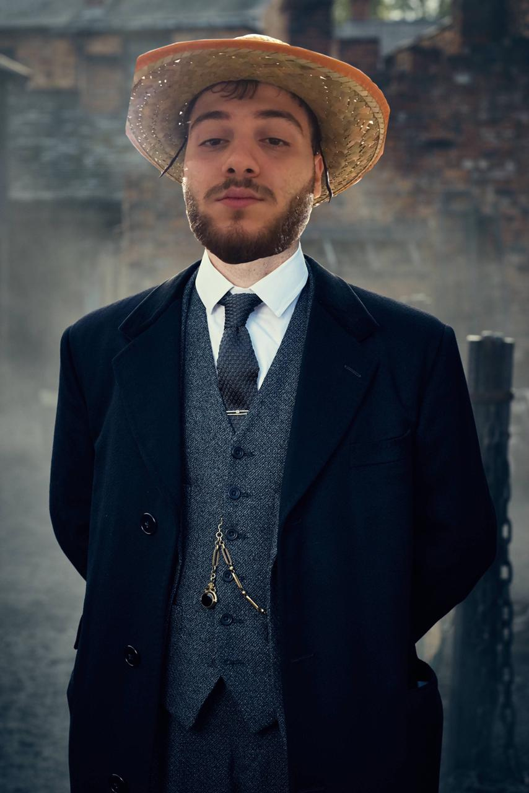

Геморрой в определённом смысле можно назвать уникальным заболеванием. Из-за расположения в районе ануса обсуждать эту болезнь с другими людьми, даже с врачом, нелегко большинству людей. В результате про геморрой существует огромное количество слухов, не имеющих никакого отношения к действительности.
Пройдите короткий само-тест на определение у Вас геморроя по ссылке ниже.
ТЕСТПравильное и адекватное лечение геморроя назначает только врач. Симптомы геморроя очень разнообразны и лечение соответственно различно. Кроме того, имеющаяся лично у Вас симптоматика может быть обусловлена другими проктологическими заболеваниями. Лечение зависит от стадии и характера болезни. Помимо медикаментозного и хирургического лечения в настоящее время применяют амбулаторные малоинвазивные методики, такие как фотокоагуляция, склеротерапия, лигирование (наложение латексных колец) геморроидальных узлов. Их применение позволяет добиться излечения в короткие сроки с минимальным риском осложнений. За рубежом оперативному лечению подвергается только 25 % больных геморроем, а 75 % проходит малоинвазивное лечение геморроя.
